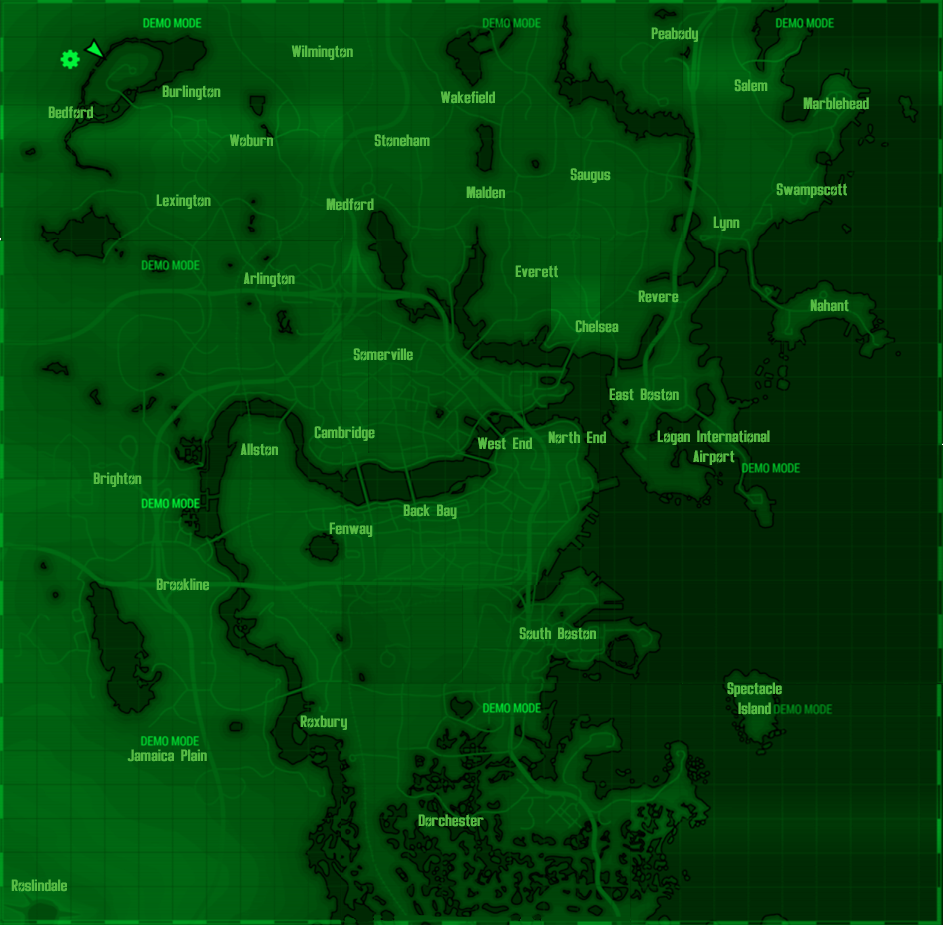

La fuerza es la medida de tu físico bruto. Afecta a tu capacidad de cargar y determina la efectividad de los ataques cuerpo a cuerpo. Strength (Fuerza) Una alta Percepción otorga un bonus a las habilidades Explosivos, Ganzúa y Armas de energía, y determina el momento en el que aparece la señal roja de la brújula (lo que indica amenazas). Perception (Percepción) Una resistencia elevada otorga bonus para Salud, resistencias al medio ambiente, y las habilidades Armas grandes y desarmado. Endurance (Resistencia) Tener mucho carisma te pone en buena disposición con la gente, y proporciona bonus para las habilidades Trueque y Conversación. Charisma (Carisma) Cuanto más alta sea tu inteligencia, más puntos de habilidad podrás distribuir cuando asciendas de nivel. Intelligence (Inteligencia) La agilidad afecta a tus habilidades Armas pequeñas y Sigilo, y al número de puntos de acción disponibles para V.A.T.S. Agility (Agilidad) Al aumentar tu suerte, aumentarán ligeramente todas tus habilidades. Una suerte alta mejora también tu Oportunidad crítica con todas las armas. Luck (Suerte) STAT Datos de usuario PipBoy Nombre: Hombre Mujer Faccion: Railroad Minutemen Institute Fecha de nacimiento: Domicilio en (Calle, plaza y número): Localidad: New Vegas Commonwelth Capital Wasteland Teléfono: Correo Electrónico: DATA  MAP Tema principal: Your browser does not support the audio element. RADIO
La fuerza es la medida de tu físico bruto. Afecta a tu capacidad de cargar y determina la efectividad de los ataques cuerpo a cuerpo. Strength (Fuerza) Una alta Percepción otorga un bonus a las habilidades Explosivos, Ganzúa y Armas de energía, y determina el momento en el que aparece la señal roja de la brújula (lo que indica amenazas). Perception (Percepción) Una resistencia elevada otorga bonus para Salud, resistencias al medio ambiente, y las habilidades Armas grandes y desarmado. Endurance (Resistencia) Tener mucho carisma te pone en buena disposición con la gente, y proporciona bonus para las habilidades Trueque y Conversación. Charisma (Carisma) Cuanto más alta sea tu inteligencia, más puntos de habilidad podrás distribuir cuando asciendas de nivel. Intelligence (Inteligencia) La agilidad afecta a tus habilidades Armas pequeñas y Sigilo, y al número de puntos de acción disponibles para V.A.T.S. Agility (Agilidad) Al aumentar tu suerte, aumentarán ligeramente todas tus habilidades. Una suerte alta mejora también tu Oportunidad crítica con todas las armas. Luck (Suerte)
Datos de usuario PipBoy Nombre: Hombre Mujer Faccion: Railroad Minutemen Institute Fecha de nacimiento: Domicilio en (Calle, plaza y número): Localidad: New Vegas Commonwelth Capital Wasteland Teléfono: Correo Electrónico: